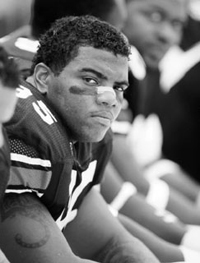
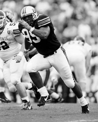

Leonardo CarsonDefensive Tackle
Most employees at Chuck E. Cheese's are going to ignore the fact that a 6-foot-3, 280-pound man is playing in the pit of colorful plastic balls at their restaurant. It might be because of fear of the man's stature. Or the mere fact that they see how much fun he is having with the little girl who is buried amongst the balls as well. The man playing in the balls is Auburn's All-SEC defensive tackle Leonardo Carson. The girl is his four-year-old daughter, Kmyah. "Going to Chuck E. Cheese is one of my daughter's favorite things to do," Carson said. "I just enjoy being with her. She is so fun to be around." Though she lives in Mobile, Ala., with her mother, Kmyah and her father's relationship is strong. "Kmyah's mother does a good job of letting her know who I am," Carson said. "The Lord has blessed me with a daughter like her. I see a lot of myself when I look at her. I just want to do anything I can to be a good father." Kmyah is not the only female that drives Carson to achieve his lifelong dream of playing in the National Football League. According to Carson, his mother, Rose, is also a strong motivating factor. "I know to put the Lord first in my life," Carson said. "But my mother is not too far behind." Growing up on the West side of Mobile, Carson's mother was the only person he was scared of, he said. "When I was younger and she said something, she meant it," Carson added. "She always taught me to speak my mind. She is an angel that is always going to be with me. She is the person that is always going to be by my side and always let me know when I am doing the right things or the wrong things." When it came down to choosing a college to play for, the high school All-American followed what his mother liked the most.  "My mother was always an Auburn fan," Carson said. "And to me it was a great place to relax, get a good education and avoid the big city obstacles." In high school, Carson did not have as much bulk on his frame as he does now and never thought his best position would be on the defensive line. The All-SEC performer started his high school career playing tight end and linebacker, emulating the likes of Lawrence Taylor and the late Walter Payton. "I always knew what I wanted to do with my life," Carson said. "That's to play football at the highest level." Little did Carson know that coming out of high school that the defensive line would be where he has had the biggest impact. "All the schools that recruited me wanted me to play tight end or linebacker," Carson said. "The only school that wanted me to play defensive line was Nebraska." The thought of playing defensive line in college was not on his mind until he took a few snaps playing defensive line in the 1996 Alabama-Mississippi All-Star Game. The play that made Carson realize he might have a better future on the line occurred late in the All-Star game with the Mississippi squad driving for the game-winning score. "I rushed the quarterback and knocked the ball out of his hands," Carson said. "I recovered the ball and clinched the victory for us." It was Carson's high school coach who first told Carson he had all the tools to play in college and to possibly have a career in the NFL, but the senior defensive tackle gives recognition to another special coach. "My father meant so much to me," Carson said. "He was like a coach in life to me. He taught me about being a man and respecting people." Carson's father died of a heart attack in April of 1998. "He was at every game and to see him up there meant a lot to me," Carson said. "When he died it seemed like a part of me died. It was frustrating because I was never as close to him as I wanted to be. I didn't know how much he really meant to me." Following the loss of his father, Carson's former position coach, Pete Jenkins stepped in to fill the void. "Coach Jenkins was always by my side," Carson said. "He respected me as a man and really made me push myself harder when I was down." The tough times were not over for Carson, as his mother contracted cancer shortly following his father's death. With these trials in his young life, Carson knew he had to pull through the tough times and make the most out of life. "I just want to make my mother happy," Carson said. "So she can lead a fun life and continue on with life." Carson's mother is doing well and has returned to work, but due to a new job this year she has not been able to attend all of her son's games. There is one game that she will be in the stands for, and Carson's eyes light up as he thinks about playing his final game in Jordan-Hare Stadium in front of his mother and daughter against arch-rival Alabama. "The Alabama game means so much to me," Carson said. "I just want to go out there and play hard. I want my mom to remember me for playing hard and leaving it all out there on the field." Whether the Tigers win or lose Carson's final game, he knows that his time on the Plains has been beneficial to his growth physically, mentally and spiritually. "I feel like I am growing each day," Carson said. "I've been blessed to have wonderful people around me who have allowed me to make positive steps in my life." One of the people from the Auburn family that has blessed Carson's life is the Tigers team chaplain Chette Williams. "It's wonderful to have people like Brother Chette who help you grow and push you to work hard at your goals," Carson said. "It's easy to trust him because he has such a strong faith." With the extra guidance from Williams, the desire to please his mother and the joy of having a beautiful daughter, Carson can leave the Plains feeling good about the person he has become and the impact he has left on this football program. Carson admits though, that a victory over Alabama would be the perfect ending to a four-year journey at Auburn as he sets his sights towards continuing his playing days in the NFL. 
What is your favorite cartoon?
What would you be doing if you were not an athlete?
What is your favorite food to cook?
What is your favorite cereal?
Who is your "Athlete of the Century"?
What are your favorite board games?
© 1999 Auburn Network, Inc. |